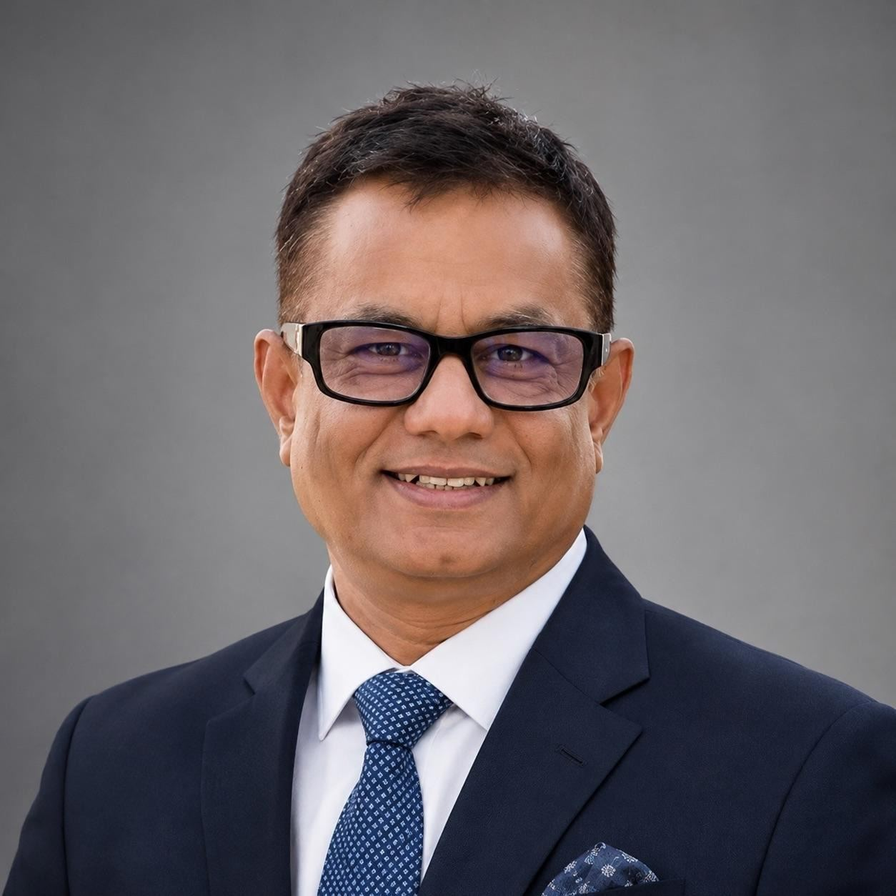

About Ajit
Business and HR Leader | Sales Effectiveness | Leadership Development

Ajit Jain brings more than 30 years of industry experience across Sales, Marketing, business leadership, P&L ownership and senior HR leadership. His career has included customer-facing commercial roles, business responsibility and leadership of people and organisational priorities across multiple markets.
This combination shapes the philosophy behind Head & Tail Asia. Having worked on both sides of the business agenda, Ajit understands that commercial plans need capable people, clear accountability and systems that support execution. Equally, people initiatives are more effective when they are connected to the realities of customers, revenue, operations and business performance.
His approach is practical and collaborative: understand the context, work with leaders to identify what matters most, build capability and support implementation. The objective is to help organisations improve performance while developing the leadership and people practices needed to sustain it.
Ajit's current research focus on leadership coaching in manufacturing also informs his interest in context-led leadership development, manager-as-coach capability and coaching as part of everyday improvement.
— Ajit
Career timeline
- Placeholder [Year – Year] · [Role, organisation, key responsibility]
- Placeholder [Year – Year] · [Role, organisation, key responsibility]
- Placeholder [Year – Year] · [Role, organisation, key responsibility]
- Placeholder [Year – Year] · [Role, organisation, key responsibility]
Professional Bio

Head & Tail Asia is led by Ajit Jain, whose 30+ years of industry leadership span Sales, Marketing, business and P&L leadership, and senior HR responsibilities. This combination brings a practical understanding of the connection between commercial ambition, organisational capability and people performance.
What leaders say
“I had the opportunity to interact with Ajit on various aspects of leadership and HR, including some informal and insightful conversations. Given his rich experience of moving from business leadership into HR, I believe Ajit brings a valuable practical perspective that can create meaningful value for any organization.”
 Dr. Chandrasekhar SripadaClinical Professor of Organisational Behaviour and Executive Director, Indian School of Business; former President and Global Head of HR, Dr. Reddy’s
Dr. Chandrasekhar SripadaClinical Professor of Organisational Behaviour and Executive Director, Indian School of Business; former President and Global Head of HR, Dr. Reddy’s
“Having interacted with Ajit extensively across professional forums, leadership panels and business discussions, I have always found him to be a thoughtful and insightful people leader who brings a strong strategic perspective to leadership, people strategy and coaching.”
 Rekha NarendraGlobal HR Leader, RealPage
Rekha NarendraGlobal HR Leader, RealPage
“Ajit brings first-hand sales experience and deep people expertise to the challenge of building high-performing sales teams.”
 Piyush MangalBoard of Director and VP of Sales
Piyush MangalBoard of Director and VP of Sales
“Ajit’s coaching stands out because it is rooted in real leadership experience and focused on the challenges leaders face every day.”
Shweta JainVP Finance
“Ajit combines business leadership, frontline sales experience, people strategy and executive coaching to help organisations translate strategy into stronger people and better performance.”
Tanay KediyalFormer MD and Country Head, Allstate India
“Ajit’s creativity and passion for doing things differently set him apart, making him a distinctive force in today’s competitive world.”
Anuj JainMD of Technology Group, Accenture